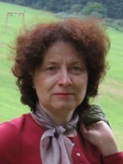

Curriculum vitae
EDUCAȚIE:
▪ 1983-1987
Universitatea “Alexandru Ioan Cuza” din Iași, Facultatea de Fizică
▪ 2000 Doctor în Fizică, teza de doctorat “Energia câmpului gravitațional”, Universitatea “Alexandru Ioan Cuza” din Iași
EXPERIENȚA PROFESIONALĂ: Departamentul de Fizică, Universitatea Tehnică “Gheorghe Asachi” din Iași
▪
1992-2001 asistent universitar; 2001-2003 șef lucrări; 2003-2008
conferențiar universitar; 2008-prezent profesor universitar (normă 100%
la Facultatea de Construcții și Instalații, Universitatea Tehnică
“Gheorghe Asachi” din Iași)
Membru:
▪ membru în Consiliul Departamentului de Fizică 2012-2016 și 2016-2020
▪ membru în Consiliul Facultăţii de Construcţii și Instalaţii 2008-2012,
2012-2016 și 2016-2020
▪ membru în Senatul Universităţii Tehnice “Gheorghe Asachi” din Iași
2016-2020
▪ membru în Comisia pentru cercetare-dezvoltare, antreprenoriat și
parteneriat public privat
▪ membru în Comisia pentru strategie instituțională, infrastructură și
management financiar
Domenii de interes:
Relativitate Generala, localizarea energiei gravitaționale, modelare
COMPETENȚE PERSONALE:
Limbi străine cunoscute:
Engleza nivel B2, Portugheza nivel C1
Competenţe de comunicare:
▪ bune abilităţi de comunicare dobândite în urma experienţei mele
profesionale
▪ excelente abilităţi de interacţiune cu studenții,
dobândite prin activitatea de profesor de fizică
Competente organizaționale:
bune competenţe de organizare dobândite prin organizarea unor conferințe
naționale și internaționale
Competenţe și abilităţi sociale:
lucrul în echipă, abilităţi de comunicare și organizare
Competenţe informatice: Windows, Office (Word, Excel, PowerPoint), Maple, Mathematica
INFORMAȚII SUPLIMENTARE:
ResearcherID: A-6012-2016 , H index: 11, Citări: 446
Publicaţii științifice: 103 articole: indexate ISI: 43, baze de date: 4, reviste
din țară: 31, conferințe: 25
Autor: 5 cărți în țară, și autor/coautor la 10 cărți și
capitole în cărți în țară și străinătate
Membru în societăți profesionale:
Romanian Society of General Relativity and Gravitation, Romanian Society
of Physics, European Society of Physics, Balkan Society of Geometers
Membru în colectivele editoriale ale
revistelor: Advances in
Mathematical Physics, Aditi
Journal of Mathematical Physics, ISRN Mathematical Physics, East
European Journal of Physics, Buletinul Institutului Politehnic din Iași,
Secția Matematică. Mecanică Teoretică. Fizică.
Invited Speaker:
5 prelegeri la conferinţe internaţionale din România, Italia, Brazilia
Premii:
8 premii naţionale acordate
de către CNCSIS în cadrul Programului Resurse Umane, competiţia
Premierea Rezultatelor Cercetării (http://www.cncsis.ro/) 2008 și 2009
http://www.cncsis.ro/Public/cat/471/Premierea%20rezultatelor%20cercetarii.html
Director:
§
director al unui număr de 4 proiecte naţionale,
§
beneficiar al unui grant
internaţional de mobilităţi în cadrul programului Women in Physics
Travel Grant 2009 acordat de către IUPAP (International Union of Pure
and Applied Physics),
§ membru în echipele a 18 proiecte naţionale de cercetare.
Membru în comitete de
organizare/știinţifice ale conferinţelor naţionale și internaţionale:
§
2th
National
Conference of Applied Physics, „Gheorghe Asachi” Technical University of Iasi, 8-9 December 2006, Iasi, Romania;
§
National Conference on Applied Physics, 4th Edition, Jubilee Edition, 60
years of Higher Education in Galati, September 25 – 26th, 2008, Galati,
Romania;
§
4th National Conference of Applied Physics, „Gheorghe Asachi” Technical University of Iasi, 19-20 November 2010, Iasi,
Romania;
§
Dynamical Systems: Theory and Applications, 11-14 January, 2012 Jadavpur
University, Kolkata, India;
§
International Conference on Engineering Education 2012, Turku Finland,
July 30 – August 3, 2012;
§
5th National Conference of Applied Physics, „Gheorghe Asachi” Technical University of Iasi, 23-24 May 2013, Iasi,
Romania.
Referent teze de doctorat: 10 teze de doctorat, 5 în ţară și 5 în străinatate
Membru în comisii de doctorat:
5 comisii de doctorat
Membru în comisii de
concurs:
9 comisii de concurs, 6 comisii de concurs pentru postul de
asistent universitar și 3 comisii
de concurs pentru postul de șef lucrări la Departamentul de Fizică,
Universitatea Tehnică “Gheorghe Asachi” din Iași
Referent știinţific/Recenzor: 15 reviste internaţionale și 2 naţionale/ 1 carte internaţional
§
Modern
Physics Letters A,
§
International Journal of Modern Physics D,
§
International Journal of Modern Physics A,
§
iNEER,
§
Foundation of Physics,
§
Foundation of Physics Letters,
§
International Journal of Theoretical Physics,
§
Astrophysics and Space Science,
§
Il
Nuovo Cimento B,
§
Phys.
Lett. B.,
§
Canadian Journal of Physics,
§
International Scholarly Research Notices
ISRN Astronomy and
Astrophysics,
§
Advances in High Energy Physics,
§
Central European Journal of Physics,
§
Physica Scripta,
§
Scientific Bulletin of Polytechnic
University of Bucharest,
§
Romania și
Buletinul Institutului
Politehnic din Iași, Secţia
Matematică. Mecanică Teoretică. Fizică
§
Report
on the book “Special Theory of Relativity” by Dr. Farook Rahaman,
Department of Mathematics, Jadavpur University, Kolkata, West Bengal,
India
§
Consulting Editor at the Contemporary Who's Who, American Biographical
Institute, 5126 Bur Oak Circle, Raleigh, NC 27612 USA
§
Research Council Member at the Biographical Centre, Cambridge, CB2 3QP,
England
Profilul biografic este prezentat in:
§
Inclusion in Who's Who in the World, the 19th Edition, 2002, published
by Marquis Who's Who, 121 Chanlon Road, P.O. Box 5, New Providence NJ
07974-0005, USA
§
Inclusion in Who's Who in the World, the 20th Edition, 2003, published
by Marquis Who's Who, 121 Chanlon Road, P.O. Box 5, New Providence NJ
07974-0005, USA
§
Inclusion in Who's Who in Science and Engineering, the 7th Edition,
2003, published by Marquis Who's Who, 121 Chanlon Road, P.O. Box 5, New
Providence NJ 07974-0005, USA
§
Inclusion in 2000 Outstanding Intelectuals of the 21th Century, Second
Edition, International Biographical Centre, Cambridge, England, 2003
§
Inclusion in Who's Who in the World, the 21th Edition, 2004, published
by Marquis Who's Who, 121 Chanlon Road, P.O. Box 5, New Providence NJ
07974-0005, USA
§
Award
International Educator of the Year, 2003, International Biographical
Centre, Cambridge, England
§
Inclusion in The Contemporary Who's Who, American Biographical
Institute, 5126 Bur Oak Circle, Raleigh, NC 27612 USA, 2003/2004
§
Inclusion in 2000 Outstanding Intellectuals of the 21st Century,
International Biographical Centre, Cambridge CB2 3QP, England, 2004
§
Inclusion in Who's Who in the World, the 22nd Edition, 121 Chanlon Road,
P.O. Box 5, New Providence NJ 07974-0005, USA, 2005